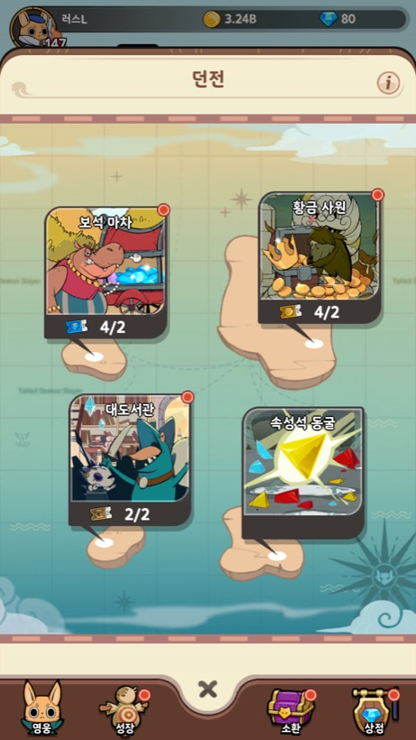
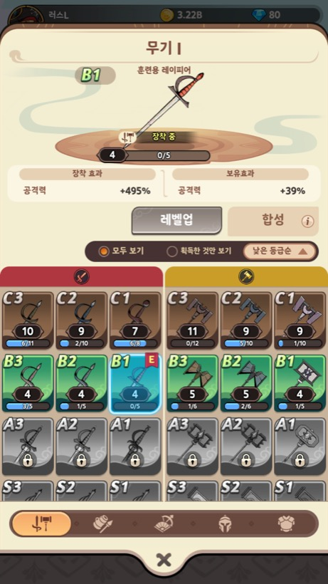
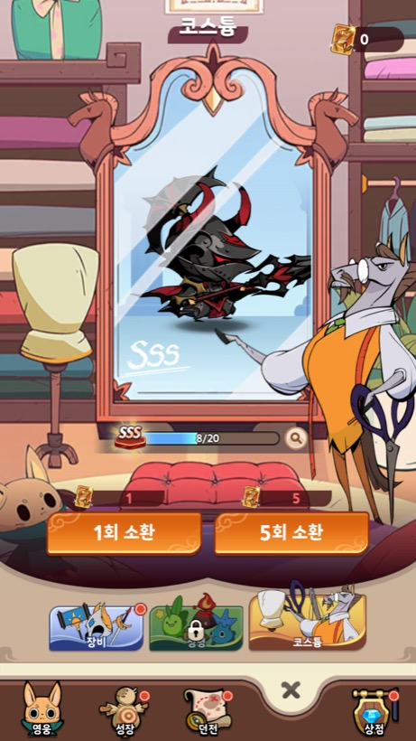
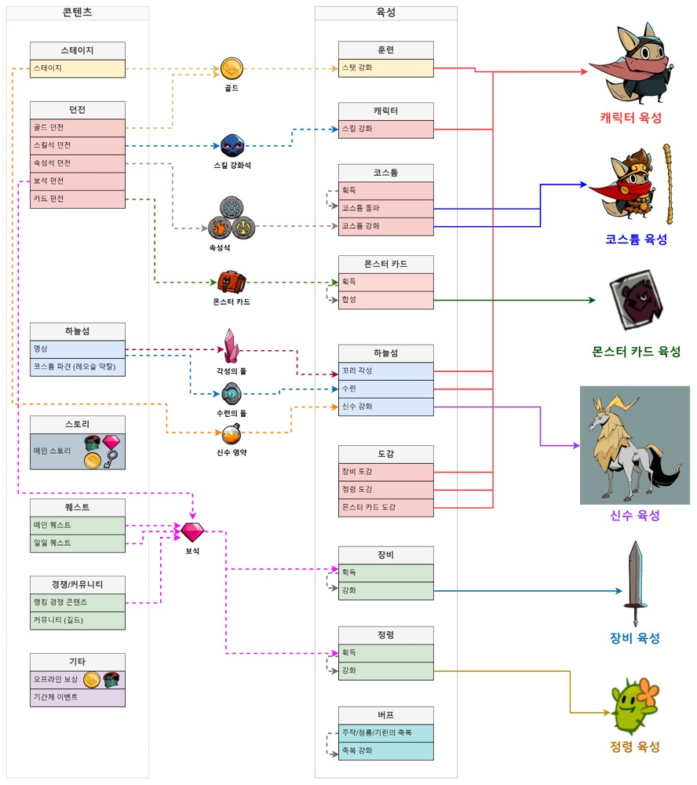
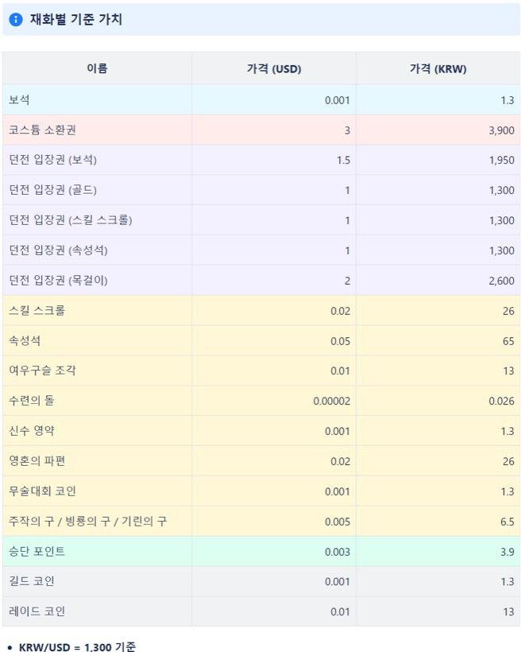

Project 01 · Mobile
Tailed Demon Slayer : RISE
기획 리더 · ㈜쿡앱스
6종의 무기 중 3종의 무기를 선택하여 순차적으로 스위칭하며 전투하는 방치형 액션 RPG. 시스템·콘텐츠·밸런스·수익화 기획을 총괄하고 기획 일정 수립과 기획서 컨펌을 담당했습니다.
| 플랫폼 | 모바일 (iOS, AOS) |
|---|---|
| 장르 | 방치형 액션 RPG |
| 개발 인원 | 8인 |
| 개발 기간 | 2022. 10. ~ 2023. 06. (약 8개월) |
| 참여 기간 | 2023. 01. ~ 2023. 06. (약 5개월) |
| 서비스 기간 | 2023. 06. ~ 현재 서비스 중 |
주요 업무
전투 및 성장 관련 게임 내 주요 시스템 / 콘텐츠 설계
무기 스위칭을 핵심으로 하는 코어 전투 구조와, 그에 연결되는 성장 시스템 및 콘텐츠를 설계했습니다.
재화와 시스템 코어루프 설계 및 기준 가치 설정
게임 내 모든 재화의 획득·소비 경로를 코어루프로 정리하고, 재화 간 교환 기준이 되는 가치 체계를 수립했습니다.
시스템 및 콘텐츠 전체 밸런싱
전투력 상승 곡선과 콘텐츠 난이도, 보상량을 하나의 기준 위에서 설계해 전체 밸런스를 조정했습니다.
유저 이탈 구간 확인을 위한 퍼널 설정 및 개선
초반 플레이 구간에 퍼널을 설정해 이탈 지점을 특정하고, 해당 구간의 흐름을 개선했습니다.
전투 및 성장 관련 게임 내 주요 시스템 / 콘텐츠 설계
무기 스위칭을 축으로 하는 전투와, 그에 물리는 성장·수집 콘텐츠를 설계했습니다. 던전 진입 구조, 장비 강화·합성 규칙, 코스튬 소환 등 각 시스템의 획득과 소비 지점을 정의했습니다.



재화와 시스템 코어루프 설계 및 기준 가치 설정
콘텐츠에서 재화가 나오고 육성으로 흘러가는 전체 순환을 하나의 구조도로 정리한 뒤, 모든 재화에 USD 기준 가치를 부여해 시스템 간 보상량을 같은 잣대로 비교할 수 있게 했습니다.


※ 밸런스 테이블·퍼널 데이터 등 사내 기밀에 해당하는 자료는 본 웹 포트폴리오에서 제외하였습니다.